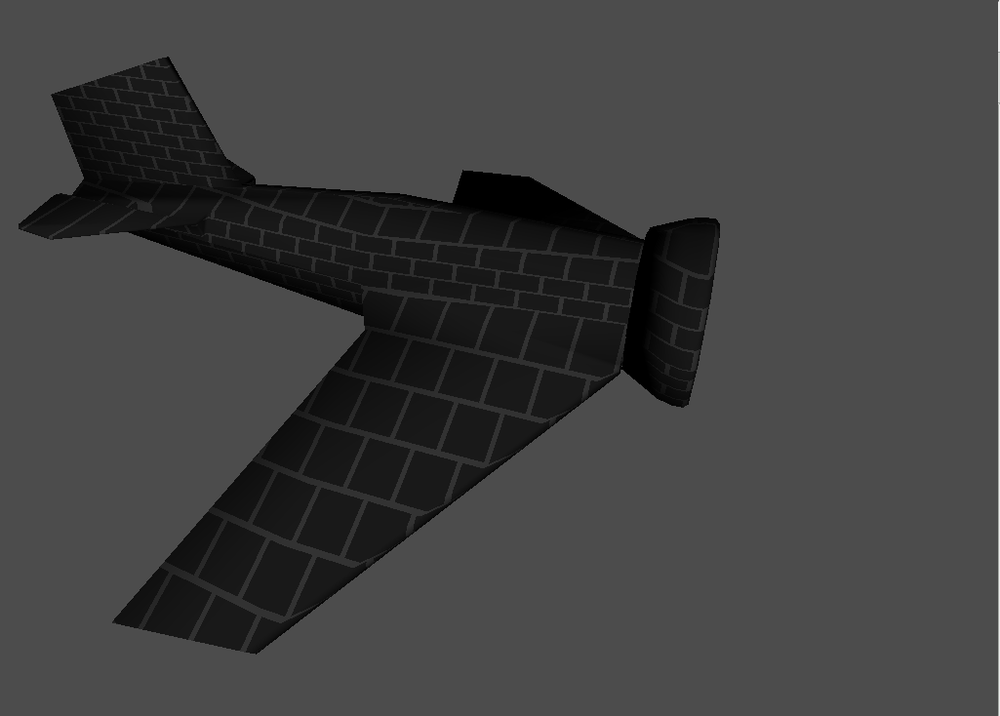
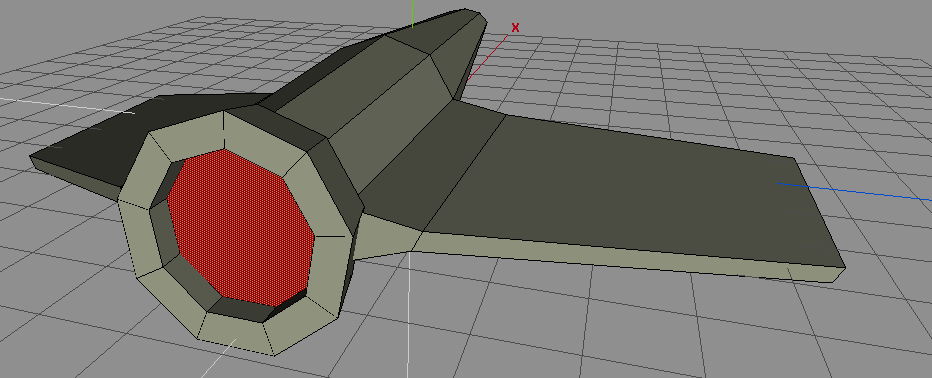

 Using shaders and custom 3D objects...
As these projects become more complex, I recognized that imposing structure early would be much easier than later. Additionally, I wanted to segregate code written by others into discrete and distinct units.
Moving files is certainly simple, but adapting the Makefile required plenty of Googling.
After struggling with the Make variables and failing, I discovered VPATH in the Makefile documentation.
Adding this colon-delimited virtual path to my Makefile, VPATH = util3d:lib,
with an entry for every library/directory has really helped keep things a bit more tidy.
I have modeled my house in Sketchup with a fair degree of accuracy and detail. There is a learning curve to Sketchp, but Wings also has a rustic feel. Using Wings3D is like learning to use vim (which I am) after having only used fancy word processors like MS Word.
Initial frustration with Wings led me to try the Blender. While Blender has a slicker interface (like Word) and probably more features, the learning curve was so steep that after 2 evenings wasted, I threw in the towel.
Assembling the infrastructure to handle shaders was straightforward with provided code.
I segregated shader code into a shader.c module that I called from main with a single call.
Much more could and should be done do further generalize these functions, but it is a beginning...